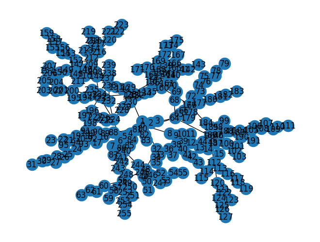
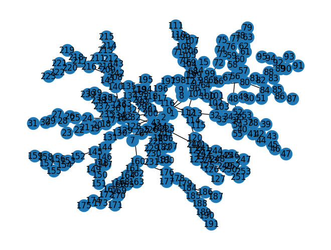
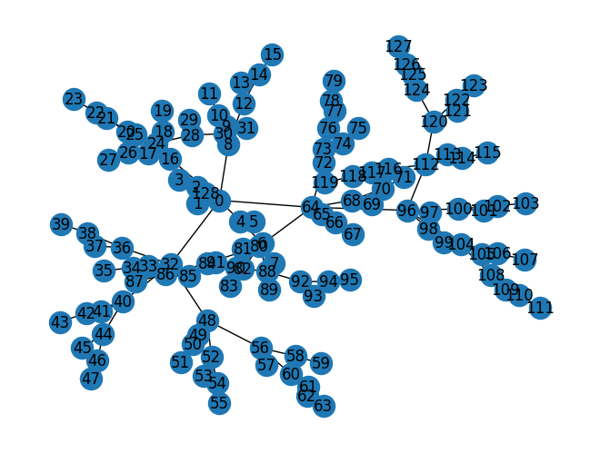
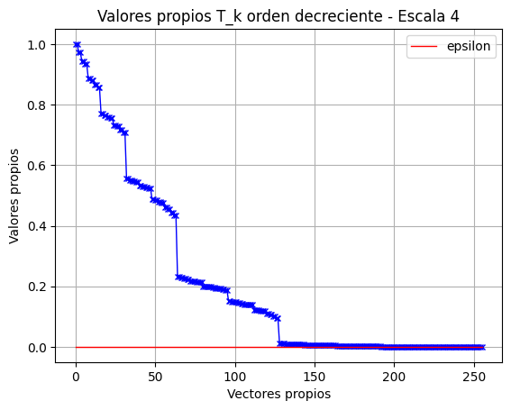
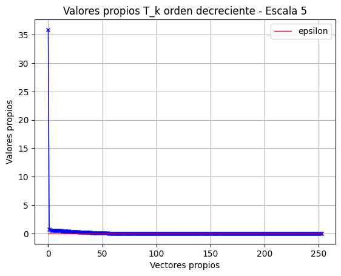
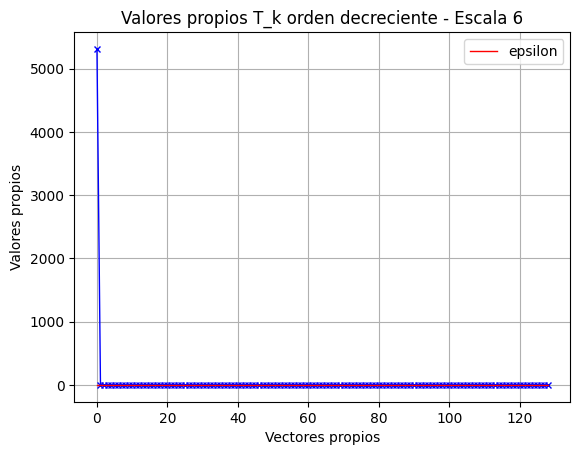

Proyecto académico
Entropía multiescala en grafos
Implementación en Python de un método para ir reduciendo la estructura de un grafos (escala) con tal de que su entropía se mantenga aproximadamente igual. Esto permite inferir que, aunque el grafo se vaya reduciendo, mantiene una estructura similar entre escalas.
Problema
Muchas redes reales, como redes sociales, biológicas o de transporte, pueden estar compuestas por miles o incluso millones de nodos, lo que dificulta su análisis y visualización. Una alternativa consiste en reducir progresivamente su tamaño, pero este proceso solo resulta útil si la red simplificada conserva las características estructurales más relevantes de la original.
Este proyecto surgió durante mi Práctica III con el objetivo de desarrollar un método que permitiera reducir la escala de un grafo manteniendo una representación equivalente de su estructura. Para evaluar qué tan similar permanecía la red luego de cada reducción, se utilizó la entropía como medida de complejidad estructural.
Solución
Para analizar la estructura de cada grafo, primero se construyó una representación matricial a partir de su matriz de adyacencia. Con ella se obtuvo la matriz de transición de una caminata aleatoria,
\[ P=D^{-1}W, \]donde \(W\) corresponde a la matriz de pesos y \(D\) es la matriz diagonal de grados del grafo.
Posteriormente se construyó una transformación simétrica
\[ T=D^{-1/2}WD^{-1/2}, \]la cual permitió estudiar la estructura espectral del grafo mediante sus autovalores y autovectores.
En cada iteración se conservaron únicamente los autovectores asociados a los autovalores más relevantes, descartando aquellos cuya contribución era superior a un umbral \(\varepsilon\). Esta reducción permitió proyectar la información del grafo sobre un espacio de menor dimensión sin perder inmediatamente sus componentes estructurales más importantes.
Finalmente, para cada nueva representación se calculó la entropía basada en la complejidad de Lempel–Ziv (LZ76). Este proceso permitió evaluar cómo evolucionaba la complejidad estructural del grafo a medida que cambiaba su escala.
\[ \mathcal{H}(G_0), \; \mathcal{H}(G_1), \; \mathcal{H}(G_2), \; \ldots, \; \mathcal{H}(G_n) \]La comparación entre estas entropías permitió estudiar la conservación de la estructura del grafo durante el proceso de reducción y dio origen al enfoque de entropía multiescala.
Resultados y conclusión
El método fue evaluado sobre distintas familias de grafos, construyendo representaciones de menor dimensión mediante el análisis espectral y calculando la entropía en cada nivel de reducción. Las siguientes imágenes muestran la evolución de algunos grafos a través de las distintas escalas generadas por el algoritmo.
Evolución de la estructura del grafo
Escala 4

Entropía: \(\mathcal{H}(G_4)\approx 0.0722\)
Escala 5

Entropía: \(\mathcal{H}(G_5) \approx 0.0734\)
Escala 6

Entropía: \(\mathcal{H}(G_6) \approx 0.1254\)
Selección espectral mediante autovalores
En cada iteración se ordenaron los autovalores de mayor a menor y se aplicó un umbral \(\varepsilon\), descartando aquellos cuya contribución era cercana a cero. Este proceso permitió conservar únicamente las componentes espectrales más relevantes para construir la siguiente escala del grafo.
Escala 4

Escala 5

Escala 6

Las escalas 4, 5 y 6 corresponden a una etapa avanzada del proceso de reducción, en la que el cambio en la representación del grafo se vuelve más evidente. En particular, los gráficos espectrales muestran cómo disminuye progresivamente la cantidad de componentes relevantes, conservando solo aquellas asociadas a los autovalores que están por debajo del umbral definido.
En este ejemplo, la entropía se mantiene relativamente estable entre las escalas 4 y 5, mientras que en la escala 6 presenta un aumento más notorio. Esto sugiere que, hasta cierto punto, la reducción conserva una estructura similar, pero que al continuar simplificando el grafo comienzan a aparecer cambios más significativos en su complejidad.
En conjunto, los resultados muestran que el análisis espectral permite construir una representación multiescala del grafo y seguir cuantitativamente los cambios en su estructura mediante la entropía. De esta forma, es posible identificar las escalas en las que la reducción aún conserva un comportamiento similar al grafo original y aquellas en las que la simplificación comienza a producir cambios más importantes.
Repositorio
El repositorio contiene la implementación completa del algoritmo de entropía multiescala desarrollado en Python, incluyendo la construcción de las matrices del grafo, el análisis espectral, la reducción iterativa de la representación y el cálculo de la entropía mediante complejidad de Lempel–Ziv (LZ76). Además, incorpora ejemplos de ejecución y las figuras utilizadas para analizar la evolución de la estructura del grafo entre distintas escalas.
Actualmente el código corresponde a la versión utilizada durante el desarrollo del proyecto. Como trabajo futuro, se espera mejorar su organización, documentación y eficiencia computacional, además de incorporar un manejo más robusto de algunos casos particulares que pueden aparecer durante el proceso iterativo de reducción.
Contenido del repositorio
- Implementación completa del algoritmo.
- Notebook con experimentos y ejemplos.
- Generación de figuras utilizadas en este proyecto.
- Referencias utilizadas para implementar codificación.